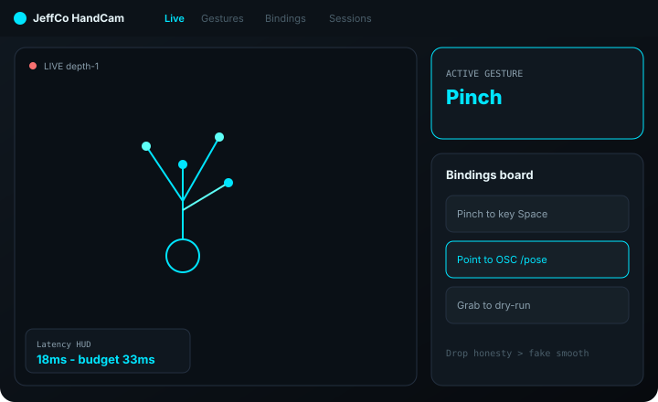
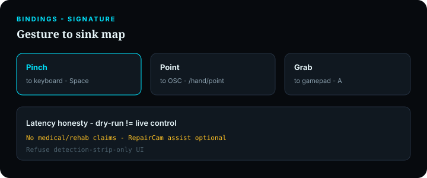

HandCam
Gesture control kit — hand skeleton, vocab, bindings, and a visible latency HUD.
For builders wiring pinch/point/grab into keys, gamepads, OSC, or RepairCam assist — not medical rehab theater.

What it does
HandCam is a gesture/MIDI-style instrument: live hand overlays, a gesture vocabulary, and a bindings board that maps gestures to control sinks.
Latency budget is visible — drop-frame honesty beats fake perfect track. Sessions record/playback for tuning.
RepairCam assist is an optional mode/plugin (point tray, etc.), not the whole product. Anti-shell: no sticky detection list without bindings + latency.
Capabilities
Day-one surface vs Advanced / gated — from Clarity GH Pages pack.
Day-one surface
Live
Day oneHands overlay + latency HUD + active gesture chip
Gestures
Day oneVocab library (pinch, point, grab, custom)
Bindings
Day oneGesture → key / mouse / gamepad / OSC / webhook
Sessions
Day oneRecord/playback for tuning
Wizard
Day oneFeed → first gesture lock → binding dry-run → optional RepairCam assist peek
Advanced / gated
Depth / WebXR hands
AdvancedAlternate backends
Dense custom vocab editors
AdvancedWhen you outgrow day-one library
Medical / rehab claims
OutOut of scope (Compliance if ever)
How to use it
First-run (wizard)
Add a feed
Cam / depth / WebXR hands.
First gesture lock
E.g. pinch; Continue locked until lock.
Binding dry-run
Map to a sink; test pulse without claiming medical outcomes.
Optional RepairCam assist
Peek — or Skip.
Finish
Latency HUD visible on Live.
Daily loop
Watch Live
Gesture chip + latency; trust drops over fake smoothness.
Curate Gestures
Vocab library.
Edit Bindings
Dry-run emits before live control.
Use Sessions
Replay awkward misses.
Activity
Emits, drops, binding fires, faults.
Honesty / trust
Clarity HandCam honesty — instrument, not therapy.
- Guidance/events, not medical claims — no therapy-mode marketing.
- Latency honesty — show budget and drops; don’t fake perfect track.
- Dry-run ≠ live control fire until armed.
- RepairCam assist is optional plugin energy — not implied actuation of tools.
- Refuse UI that is only a detection strip without binding board + latency HUD.
Screenshots
Brochure frames elevated from Design UI mocks.

Record/playback tuning
From Design-jeffco-handcam-ui-mocks/
Optional RepairCam assist peek
Get started
Wire module path / docs when Builder queues the Pages deploy.